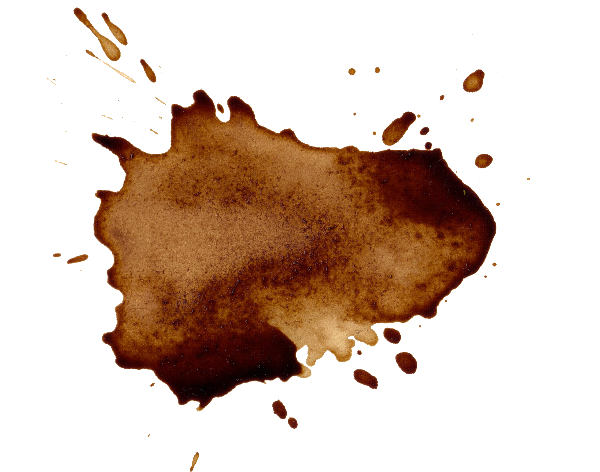

Amor, no soy el mejor escribiendo cosas bonitas ni expresando talvez sus sentimientos en papel o en viva voz, cuando escribi esta carta me era dificil no pensar en nuestra relacion (no solo de noviazgo) si no la relacion que tenemos desde hace casi 4 años, sin embargo cada vez que pienzo en estos 4 años me doy cuenta en lo mucho que has crecido y cambiado,aunque en escencia sigues siendo tu, cada vez que te veo en tu casa y espero en la sala, no puedo evitar ver
tus fotografias en la pared, me causa nostalgia por alguna razon, tambien en algunas ocaciones siento como si hubiera estado con tigo de alguna manera en esos momentos sin saberlo (es curioso que en este momento que escribo siento nostalgia igial), yo siento al ver esas fotografias muchos sentimientos que se desprenden de ellas y eso me llevo a la conclusion que a quien tengo en mi vida como novia es sin duda alguna alguien muy especial para el mundo,se cumplen
22 años en los que le haz dado sonrisas a este mundo, que lo haz llenado de tu alegria y de tu escencia, solo he compartido con tigo los ultimos 4 años pero a pesar de todo lo que ah pasado espero poder seguir estando a tu lado para poder ver como dejas lleno de sentimientos y felicidad por donde pasas, Te Amo!
